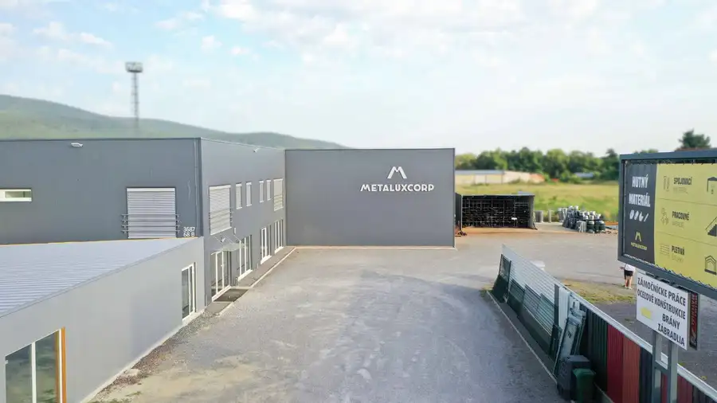
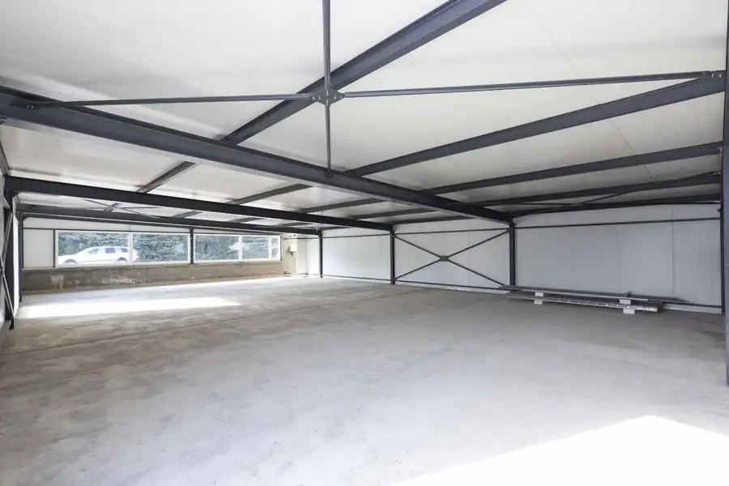
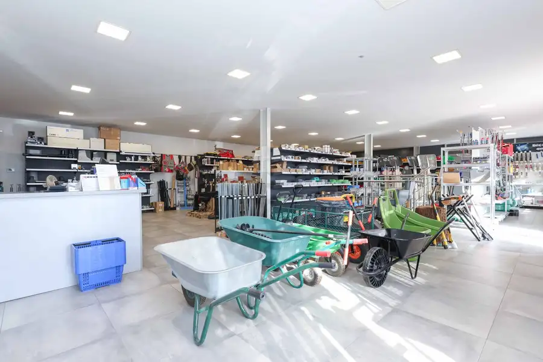
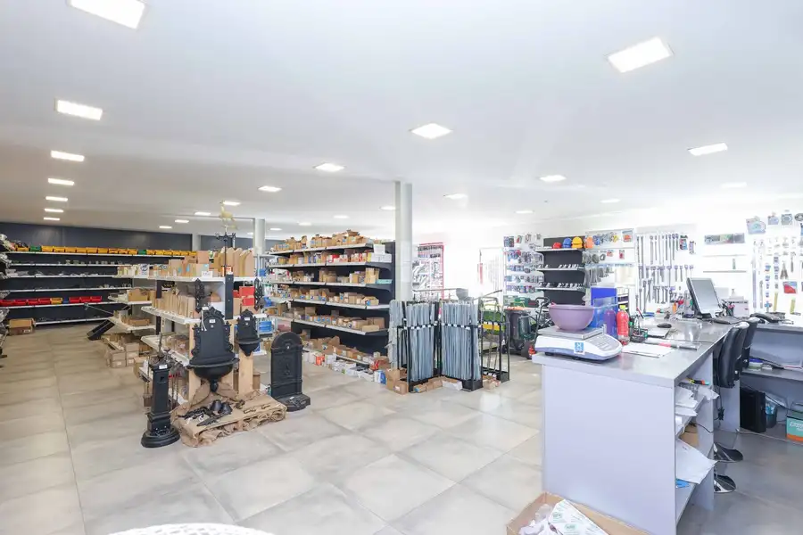
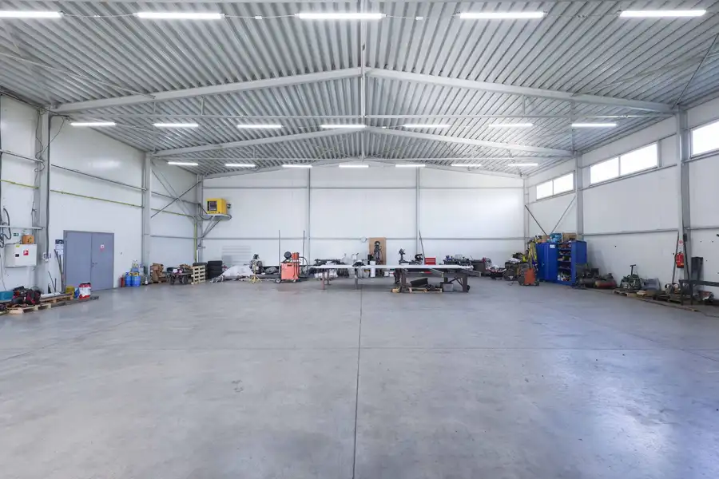
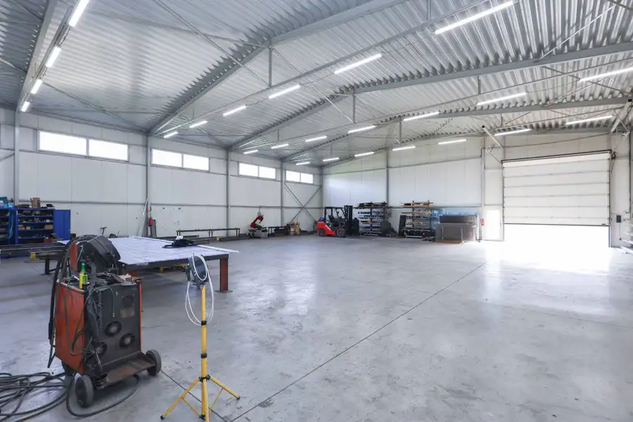
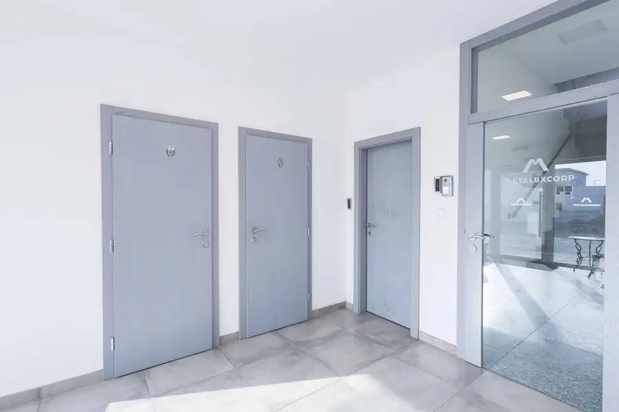

Na predaj novostavba - výrobná hala a administratívne priestory, priemyselná zóna Zlaté Moravce
Zlaté Moravce







- Plocha1133 m²
- StavNovostavba
- VlastníctvoOsobné
O nehnuteľnosti
Realitná kancelária BROTHERS Vám exkluzívne ponúka na predaj výrobnú halu a administratívne priestory v priemyselnej zóne Zlaté Moravce. Budova postavená na pozemku o rozlohe 3813 m2 bola skolaudovaná v roku 2017 a pozostáva z dvoch podlaží s celkovou výmerou 1133 m2. ZÁKLADNÉ ÚDAJE:- pozemok o rozlohe 3813 m2- novostavba, dve podlažia o výmere 1133 m21NP - podlahová plocha 956 m2- vstupný vestibul, predajňa, sklad – výrobná hala o výmere 545 m2, predajno - administratívne priestory (showroom) o výmere 191m2, sociálne zariadenia, sprcha, šatňa, miestnosť pre upratovacie služby2NP - podlahová plocha 177 m2- kancelárske priestory, archív, kuchynka, technická miestnosť, sociálne zariadenia, sprcha, šatňa, miestnosť pre upratovacie služby- kancelárske priestory sú klimatizované, na oknách sú vonkajšie rolety- alarm, videovrátnik, predpríprava na kamerový systém- napojenie na všetky IS, vlastný plynový kotol, žumpa, optika- pozemok je spevnený a oplotený- parkovanie pre vozidlá pred budovou- jednoduchý vstup na pozemok cez elektrickú bránu pre osobné vozidlá a taktiež kamióny VYUŽITIE:Objekt je vhodný ako sídlo spoločnosti s administratívnym, výrobným, skladovým a predajným zázemím.LOKALITA A PRÍSTUP:- poloha budovy umožňuje jednoduchú dostupnosť (aj kamiónov) zo všetkých smerov, rýchle napojenie na diaľnicu- komplexná občianska vybavenosť- výborná dopravná dostupnosť- Bratislava 120 kmVIDEOOBHLIADKA: https://youtu.be/uiM1BR5gUKw?feature=sharedCENA : 1.390.000,- € vrátane provízie a kompletného servisu realitnej kancelárie BROTHERSKONTAKT:Ohľadne obhliadky kontaktujte makléra:Mgr.Monika Muchová+421 911 149 827, monika.muchova@brothersreal.comPREZENTOVANÉ INFORMÁCIE BOLI NADOBUDNUTÉ V DOBREJ VIERE OD VLASTNÍKA NEHNUTEĽNOSTI A REALITNÁ KANCELÁRIA BROTHERS ICH SPROSTREDKÚVA AKO INFORMATÍVNE ÚDAJE, ZA ICH SPRÁVNOSŤ A ÚPLNOSŤ NENESIE ZODPOVEDNOSŤ.
Parametre
- Bezpečnosť
- Alarm
- Doprava
- Cesta, Diaľnica
- Druh
- Objekt pre obchod
- Dátum zverejnenia
- 18. 09. 2023
- Plocha pozemku
- 3813 m²
- Rok kolaudácie
- 2017
- Stav nehnuteľnosti
- Novostavba
- Telekomunikácie
- Optická sieť
- Typ
- Predaj
- Vlastníctvo
- Osobné
- Vybavenie
- Vonkajšie parkovacie miesto
- Vykurovanie
- Vykurovany, Klimatizacia
- Úžitková plocha
- 1133 m²